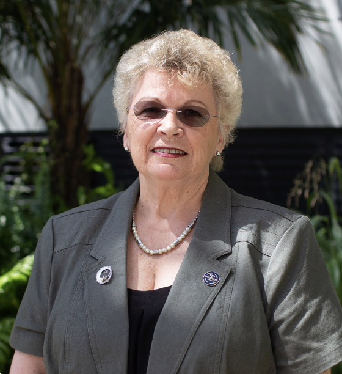
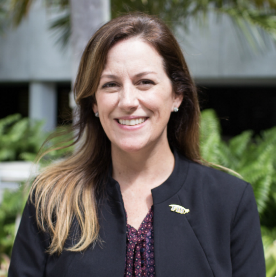
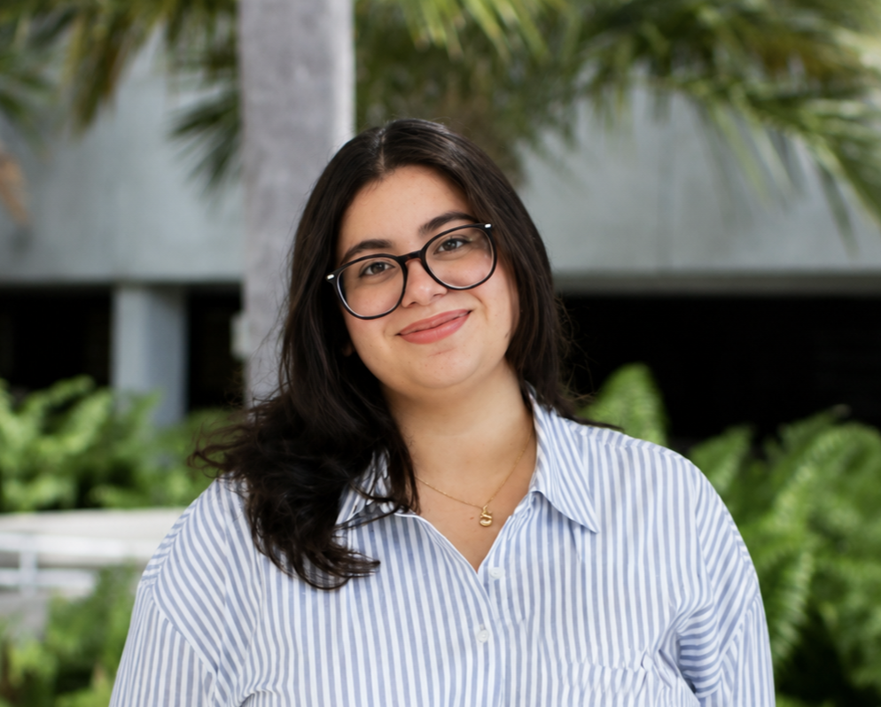

OURI
Florida International University
Florida International University
Supporting undergraduate researchers through mentorship, opportunities, and engagement in the biological sciences.
The Office of Undergraduate Research and Internships (OURI) within the Department of Biological Sciences at Florida International University supports undergraduate students as they explore research opportunities, develop professional skills, and engage in meaningful scholarly experiences.
Through research programs, internships, workshops, and events, OURI connects students with faculty mentors and resources that encourage discovery, innovation, and academic growth across the biological sciences.
The mission of the Office of Undergraduate Research and Internships (OURI) is to provide Biology and Marine Biology students with access to impactful research experiences, mentorship, and professional development opportunities that prepare them for future careers in science, healthcare, and research.
OURI promotes a culture of undergraduate research by supporting faculty-mentored projects, facilitating research training programs, and creating opportunities for students to communicate and celebrate their scholarly achievements.

Department Chair, Biological Sciences

Assistant Director, Office of Undergraduate Research & Internships

Student Assistant, Office of Undergraduate Research & Internships